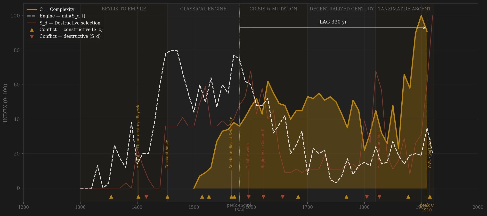
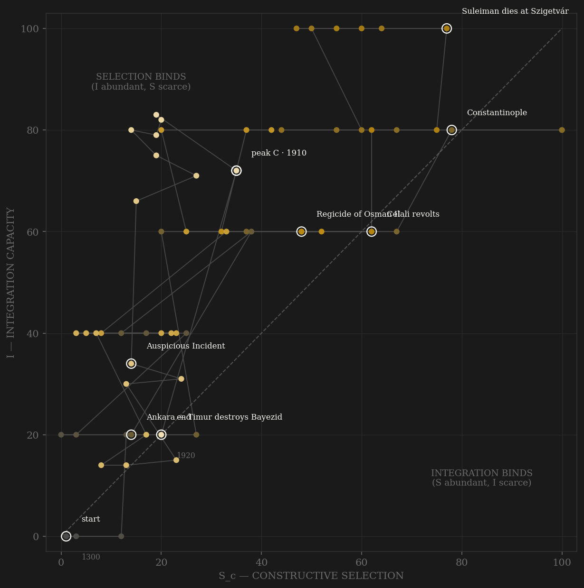

The Ottoman engine peaks in the 1460s under Mehmed II — earlier than the Suleiman legend — and holds a plateau through the 1570s. The inputs were the most explicit selection machinery any state has run: the devshirme levy pulling talent out of the Balkans into the palace schools, and institutionalized fratricide pruning the succession itself (the S_d file records it directly — this is the one polity where destructive selection was written into law). Integration scores 100 across the Suleiman decades: timar cadastres, the kanun law layered over sharia, a Mediterranean-to-Basra logistics state. Then the honest surprise the build refused to smooth away: measured complexity — Pamuk's Istanbul real wages, tax capacity, GDP per capita — does not peak in the 1550s. It peaks in the late Hamidian era, around 1900, propped by industrialization spillover and Tanzimat state-building (I climbs 31→83 from the 1820s to the 1900s). Suleiman's golden age was an engine peak, not an output peak. The 17th-century crisis is all present and found blind — the 1585 debasement jumps E, the Celali revolts spike S_d — but the empire's material ceiling came four centuries after its institutional one. The +440yr raw lag is reported as found; whether it counts as inflection evidence or as industrialization contamination is discussed on the page, not hidden in a footnote.

The trajectory rides the top of the integration axis for its first three measured centuries — the classical institution set at full function with external war nearly constant: the path lives right of the diagonal, pressure abundant, coordination the binding constraint only at the very start. The 17th century drags it down-left: Celali revolts, Janissary politics, the harem succession replacing fratricide with the kafes — S_d transformed from a pruning mechanism into a palace pathology. The remarkable feature is the tail: unlike Rome or Tang, the path turns and climbs again — the Tanzimat re-ascent along the integration axis, telegraph lines and provincial reform, right up until the empire is partitioned while still institutionally ascending. The Ottoman phase portrait is the only one in the sample that ends going up.
Coded by locus and target, never by outcome — 283 conflicts from the Brecke catalog machine-coded (198 external, 85 internal), plus ten documented hand-additions, the largest being the Celali revolts, which Brecke misses entirely. The Ottoman ledger contains the study's sharpest test of the coding rule: institutionalized fratricide. Each accession execution was violence aimed at the polity's own core — S_d by locus — yet the empire ran its finest centuries while practicing it, which is exactly what the framework's small-but-negative S_d coefficient predicts: destructive selection is a tax, survivable when the engine is strong, fatal when compounded. The Auspicious Incident of 1826 is the mirror case: the massacre of the Janissaries was internal violence that removed a blocking coalition — coded S_d by locus, followed by the Tanzimat integration climb the coding did not know was coming.
| YEAR | CONFLICT | CODE | CODING RATIONALE |
|---|---|---|---|
| 1354 | Gallipoli foothold | Sc | External expansion into Europe begins |
| 1402 | Ankara — Timur destroys Bayezid | Sc | External catastrophe; empire nearly unmade, succession civil war follows (that decade coded S_d separately) |
| 1416 | Şeyh Bedreddin revolt | Sd | Internal religious-social rising during the Interregnum |
| 1453 | Constantinople | Sc | External conquest; the engine's proof of function |
| 1514 | Chaldiran (Safavid wars begin) | Sc | Peer rivalry on the eastern frontier; the long Sunni-Shia contest |
| 1526 | Mohács | Sc | External; Hungary broken, Habsburg contest joined |
| 1566 | Suleiman dies at Szigetvár | Sc | The engine plateau's end-marker; external war to the last |
| 1571 | Lepanto | Sc | External naval defeat; fleet rebuilt within a year — engine still functional |
| 1596 | Celali revolts | Sd | Anatolia in rural insurrection for a generation — absent from Brecke, hand-added; the S_d spike of the crisis century |
| 1622 | Regicide of Osman II | Sd | Janissaries kill the sultan; the selection machine now selects against reform |
| 1656 | Köprülü restoration purges | Sd | Internal violence in service of state repair; locus rule holds regardless |
| 1683 | Second siege of Vienna | Sc | External overreach; the long territorial ebb begins |
| 1768 | Russian wars begin | Sc | The pressure that eventually forces reform |
| 1804 | Serbian uprising | Sd | Internal-provincial revolt; the nationalities question opens |
| 1826 | Auspicious Incident | Sd | Massacre of the Janissaries — internal violence removing a blocking coalition; Tanzimat climb follows |
| 1877 | Russo-Turkish War | Sc | External; Balkan territorial collapse |
| 1915 | WWI / partition | Sc | External war ends the empire while its integration index is still rising |
| COMPONENT | GRADE | BASIS |
|---|---|---|
| S_c — Constructive | ◐ catalog-coded | 198 external conflicts, Brecke catalog by locus + hand-coded additions (Imber 2002, Finkel 2005) |
| S_d — Destructive | ◐ catalog + file | 85 internal conflicts + ottoman_succession_violence.csv (fratricide weighted 0.40); Celali hand-added (absent from Brecke) |
| I — Integration | ○ coded + late measured | Admin ordinal (İnalcık, Imber, Finkel, Barkey, Zürcher); measured log foreign trade from 1784 |
| C — Complexity | ◐ measured | Pamuk Istanbul real wages 1489–1914, Bairoch/Chandler Istanbul population, Maddison GDPpc anchors, Karaman-Pamuk tax/GDP; NaN before 1500 |
| E — Entropy | ◐ measured | Pamuk CPI + akçe silver content 1326–1844 (Allen-Sargent), Birdal debt-service ratio 1854+ |
63 decade rows by scripts/build_ottoman_sicre.py; audit in components_audit.csv. Honest caveats: R uses modern-Turkey-borders population (understates empire ~3–4×, flagged in every R_note); Istanbul's 700k plateau 1600–1800 is a century-anchor artifact; the raw +440yr lag to the 1900s C peak likely mixes industrialization spillover into the outcome variable and is flagged for discussion rather than scored naively. Rebuild: build_ottoman_sicre.py, then polity_report.py --slug ottoman